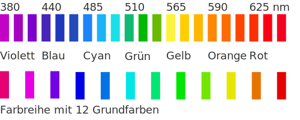
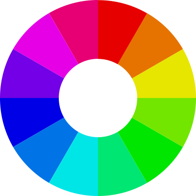
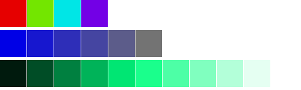
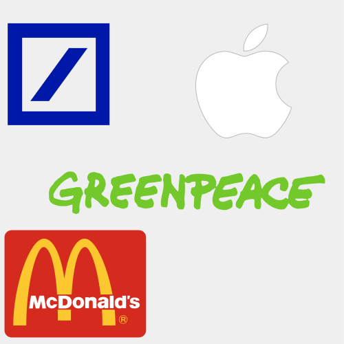

Farben bringen Lebendigkeit und Bedeutung in die Welt. Menschen
ssoziieren Farben haben eine psychologische eine symbolische und
eine kulturelle Bedeutung. Sie werden vom Menschen mit Emotionen
und Stimmungen in Verbindung gebracht.
Grün steht zum Beispiel psychologisch für: Unreife, Jugend,
Grünschnabel. Symbolisch für Natur, gesund, frisch, Erholung.
Und kulturell für Hoffnung, die Zeit nach der Entbehrung,
Frühling. Grün: Du darfst!
Farbenlehre
Farben sind ein Teil des Lichts. Licht ist eine
elektromagnetische Welle, die sich in einem bestimmten
Frequenzbereich bewegt. Der sichtbare Bereich des Lichts
liegt zwischen 380 nm und 780 nm.
Farben entstehen, wenn Licht auf Materie trifft. Die Materie
absorbiert einen Teil des Lichts und reflektiert den Rest.
Die reflektierten Lichtwellen werden von den Rezeptoren in
der Netzhaut des Auges wahrgenommen und als Farben
interpretiert. Im Dunkeln sehen wir keine Farben.

Farbmodelle
Es gibt verschiedene Farbmodelle, die Farben beschreiben und
darstellen. Die bekanntesten sind:
RGB: Rot, Grün, Blau
CMYK: Cyan, Magenta, Yellow, Key (Schwarz)
HSB: Hue, Saturation, Brightness
Lab: Luminance, a, b
Farbpsychologie
Farben haben eine psychologische Wirkung auf den Menschen.
Sie können Stimmungen und Emotionen hervorrufen. Die
Kulturell: Neid, Eifersucht, Sonne.
Gelb: Achtung!
Grün steht für:
Psychologisch: Unreife, Jugend, Grünschnabel
Symbolisch: Natur, gesund, frisch, Erholung
Kulturell: Hoffnung, die Zeit nach der Entbehrung,
Frühling.
Grün: Du darfst!
Farben können auch kulturell unterschiedlich interpretiert
werden. In China steht Rot für Glück und Freude, in Europa
für Liebe und Leidenschaft.
Farben in der Gestaltung
Farben spielen in der Gestaltung eine wichtige Rolle. Sie
können Stimmungen und Emotionen hervorrufen. Sie können
Informationen vermitteln und Akzente setzen. Sie können
Strukturen und Hierarchien sichtbar machen. Sie können
Marken und Produkte erkennbar machen.
Farben sollten bewusst eingesetzt werden. Sie sollten zum
Inhalt und zur Zielgruppe passen. Sie sollten in einem
harmonischen Verhältnis zueinander stehen. Sie sollten
barrierefrei sein und auf verschiedenen Geräten gut
erkennbar sein.
Farbharmonien
Farben können harmonisch oder disharmonisch wirken. Harmonie
entsteht, wenn Farben in einem bestimmten Verhältnis
zueinander stehen. Es gibt verschiedene Farbharmonien:
Farbenkreis als Werkzeug

Die Farben aus dem sichtbaren Spektrum können als
Farbkreis dargstellt werden. So entstehen
Winkel-Beziehungen, aus denen zum Beipiel Harmonien
abgeletet werden.
Monochromie: Eine Farbe in verschiedenen Helligkeiten
und Sättigungen.
Komplementärkontrast: Farben, die sich im Farbkreis
gegenüberliegen. (Rot-Grün, Blau-Orange, Gelb-Violett)
Triaden: Drei Farben, die im Farbkreis gleich weit
voneinander entfernt sind.
Analoga: Farben, die im Farbkreis benachbart sind.
Farbkontraste
Farbkontraste enststehen, wenn Farben in einem bestimmten
Verhältnis zueinander stehen. Sie können die Wirkung von
Farben verstärken oder abschwächen. Es gibt verschiedene
Farbkontraste:
Farbtonkontrast: Unterschiede im Farbton.
Sättigungskontrast: Unterschiede in der Sättigung.
Helligkeitskontrast: Unterschiede in der Helligkeit.

Farbkontraste: Farbton, Sättigung, Helligkeit. Mit
Kontrasten lassen sich Hierarchien abbilden.
Farben bei Unternehmen
Farben spielen auch bei Unternehmen eine wichtige Rolle. Sie
können die Identität und die Werte eines Unternehmens
transportieren. Sie können die Zielgruppe ansprechen und
Emotionen wecken. Sie können die Wiedererkennung und die
Differenzierung fördern.
McDonald's: Rot und Gelb stehen für
Schnelligkeit und Fröhlichkeit.
Deutsche Bank: Blau steht für
Seriosität und Vertrauen.
Greenpeace: Grün steht für Natur und
Umweltschutz.
Apple: Weiß steht für Einfachheit und
Design.

Im allgemeinen wird den Farben folgende Bedeutung beim
Einsatz von Unternehmensfarben zugeschrieben: